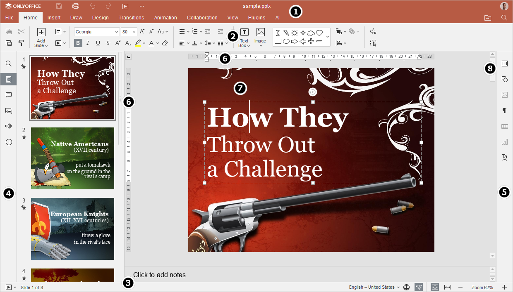
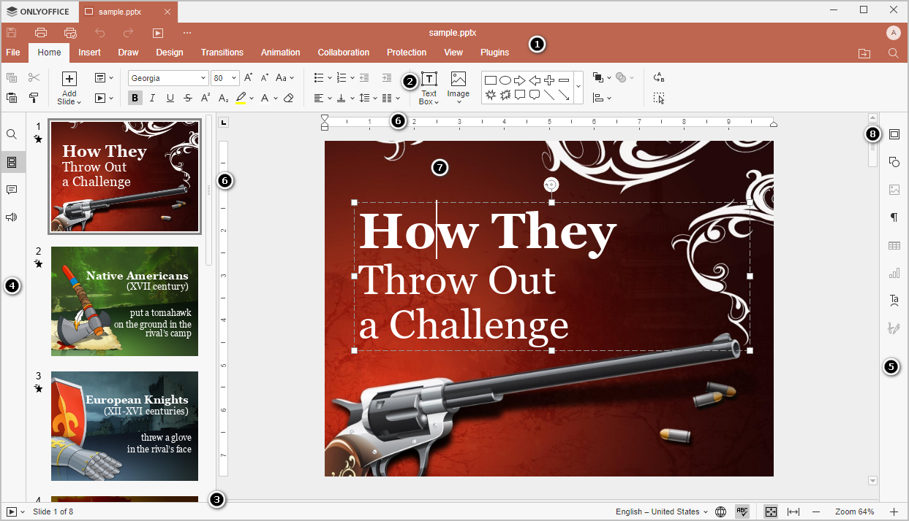

Predstavljanje korisničkog interfejsa Presentation Editor-a
Presentation Editor koristi interfejs sa karticama u kojem su komande za uređivanje grupisane u kartice prema njihovoj funkcionalnosti.
Glavni prozor Online Presentation Editor-a:

Glavni prozor Desktop Presentation Editor-a:

Interfejs editora sastoji se od sledećih glavnih elemenata:
-
Zaglavlje editora prikazuje logo, kartice svih otvorenih prezentacija sa njihovim nazivima i kartice menija.
Sa leve strane zaglavlja editora nalaze se dugmad Sačuvaj, Odštampaj datoteku, Poništi, Ponovi i Pokreni projekciju slajdova od početka. Kliknite na ikonu sa tačkama desno da biste prilagodili koja dugmad će biti sakrivena, ukoliko je potrebno.
Sa desne strane zaglavlja editora, pored korisničkog imena, prikazane su sledeće ikone:
- Otvori lokaciju datoteke - u desktop verziji omogućava otvaranje fascikle u kojoj je datoteka sačuvana u prozoru File Explorer-a. U online verziji omogućava otvaranje fascikle modula Dokumenti u kojoj je datoteka sačuvana, u novoj kartici pregledača.
- Deli - (dostupno samo u online verziji) omogućava podešavanje prava pristupa dokumentima sačuvanim u oblaku.
- Označi kao omiljeno - kliknite na zvezdicu da biste dodali datoteku u omiljene radi lakšeg pronalaženja. Dodata datoteka predstavlja samo prečicu, dok sama datoteka ostaje sačuvana na originalnoj lokaciji. Uklanjanje datoteke iz omiljenih ne briše datoteku sa originalne lokacije.
- Pretraga - omogućava pretragu prezentacije po određenoj reči, simbolu itd.
-
Gornja alatna traka prikazuje skup komandi za uređivanje u zavisnosti od izabrane kartice menija. Trenutno su dostupne sledeće kartice: Datoteka, Početna, Umetanje, Crtanje, Dizajn, Prelazi, Animacije, Saradnja, Zaštita, Dodaci.
Opcije Kopiraj, Nalepi, Iseci i Izaberi sve uvek su dostupne sa leve strane gornje alatne trake, bez obzira na izabranu karticu.
- Statusna traka na dnu prozora editora sadrži ikonu Pokreni projekciju slajdova, kao i neke alate za navigaciju: indikator broja slajda i dugmad za uvećanje. Statusna traka takođe prikazuje određena obaveštenja (kao što su „Sve izmene su sačuvane“, „Veza je prekinuta“ kada nema konekcije i editor pokušava ponovno povezivanje itd.) i omogućava podešavanje jezika teksta i uključivanje provere pravopisa.
-
Leva bočna traka sadrži sledeće ikone:
- - omogućava korišćenje alata Pretraga i zamena,
- - omogućava prikaz slajdova i navigaciju kroz njih,
- - omogućava otvaranje panela Komentari,
- - (dostupno samo u online verziji) omogućava otvaranje panela Čet,
- - (dostupno samo u online verziji) omogućava kontaktiranje našeg tima za podršku,
- - (dostupno samo u online verziji) omogućava prikaz informacija o programu.
- Desna bočna traka omogućava podešavanje dodatnih parametara različitih objekata. Kada izaberete određeni objekat na slajdu, odgovarajuća ikona se aktivira na desnoj bočnoj traci. Kliknite na ovu ikonu da biste proširili desnu bočnu traku.
- Horizontalni i vertikalni Lenjiri pomažu pri postavljanju objekata na slajd i omogućavaju podešavanje tabulatora i uvlačenja pasusa unutar tekstualnih okvira.
- Radna površina omogućava pregled sadržaja prezentacije, unos i uređivanje podataka.
- Klizač sa desne strane omogućava pomeranje prezentacije gore i dole.
Radi vaše pogodnosti, možete sakriti neke komponente i ponovo ih prikazati kada je potrebno. Da biste saznali više o podešavanju prikaza, pogledajte ovu stranicu.
Kada ima mnogo ikona na levim i desnim panelima, one koje se nalaze ispod biće skrivene i mogu se otvoriti pomoću dugmeta Više.